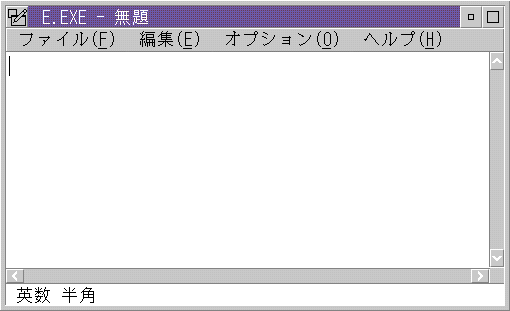

<HTML>
<HEAD>
<META HTTP-EQUIV="CONTENT-TYPE" CONTENT="TEXT/HTML; CHARSET=UTF-8">
<TITLE>Frame Controls</TITLE>
<STYLE>
PRE {
  FONT-FAMILY: Consolas, "Lucida Console", "Courier New", Courier, MONOSPACE;
}
</STYLE>
</HEAD>
<BODY>
<H1>Frame Controls</H1><!-- entering slot 68 -->
<P>
DBCS PM provides three frame controls in addition to all the frame controls
supported by SBCS PM.  The following are the names (and their class names)
of these new frame controls:<!-- lm: 0x2 3 -->
<UL>
<P>
<LI><!-- lm: 0x2 6 -->Keyboard Status Area (<B>WC_DBE_KBDSTAT</B>)<!-- lm: 0x2 3 -->
<P>
<LI><!-- lm: 0x2 6 -->Predefined Edit Control for Input Conversion (<B>WC_DBE_PECIC</B>)
<!-- lm: 0x2 3 -->
<P>
<LI><!-- lm: 0x2 6 -->Application Status Area (<B>WC_DBE_APPSTAT</B>)<!-- lm: 0x2 1 -->
</UL>
<P>
These three frame control are used by the input method mechanism to show
the on going status of the DBCS keyboard and input method. These three frame
controls form the keyboard status line in DBCS PM. The WC_DBE_PECIC control
will be located in the keyboard status line or located on the current cursor
position (on the spot) depending on the set up of end user.
<P>
The following shows where these controls are positioned in a frame window:
┌──────────────────────────────────────────────────────────────────────┐│┌
─ ┬ ─ ─ ─ ─ ─ ─ ─ ─ ─ ─ ─ ─ ─ ─ ─ ─ ─ ─ ┬ ─ ─ ─ ─ ─ ─ ─ ─ ─ ─ ─ ─ ─ ─ ─
─ ─ ─ ─ ─ ─ ─ ─ ┬ ─ ─ ─ ─ ─ ─ ─ ─ ─ ─ ─ ─ ─ ─ ─ ─ ─ ┬ ─ ┬ ─ ┐│
<BR>
│ │-│          │     Title     │         │││ │
<BR>
│S├─┴──────────────────┴───────────────────────┴─────────────────┴─┴─┤s│
<BR>
│i│ Application Menu                         │i│
<BR>
│z├────────────────────────────────────────────────────────────────┬─┤z│
<BR>
│i│                                 ││i│
<BR>
│n│                                 ├─┤n│
<BR>
│g│                                 │ │g│
<BR>
│ │                                 │ │ │
<BR>
│B│ Client Window                          │ │B│
<BR>
│o│                                 │ │o│
<BR>
│r│                                 │ │r│
<BR>
│d│                                 │ │d│
<BR>
│e│                                 ├─┤e│
<BR>
│r│                                 ││r│
<BR>
│ ├─┬────────────────────────────────────────────────────────────┬─┼─┤ │

<BR>
│ ││                               ││ │ │
<BR>
│ ├─┴───────┬────────────────────────────────────────────────────┴─┴─┤ │

<BR>
│ │ KBDSTAT │         PECIC or APPSTAT            │ │
<BR>
│ └─────────┴────────────────────────────────────────────────────────┘ │

<BR>
└──────────────────────────────────────────────────────────────────────┘
<BR>

<P>
The following is the actual appearance of a standard window.<!-- Unable to decode bitmap format -->
<P>
The set of three frame controls that make up the DBCS Keyboard Shift Status
Display is hereafter referred to as a<I> DBCS Keyboard Shift Status Area</I>.

<P>
A DBCS Keyboard Shift Status Area can be added when creating a window by
using one frame control flag,<B> FCF_DBE_APPSTAT</B>.
<PRE>flCreate =  FCF_STANDARD | <B>FCF_DBE_APPSTAT</B>;

hwndFrame = WinCreateStdWindow(
             HWND_DESKTOP,
             WS_VISIBLE,
             (PULONG)&amp;flCreate,
             "MyWindow",
             "",
             0L,
             NULL,
             ID_WINDOW,
             (PHWND)&amp;hwndClient
             );
</PRE>

<P>
Since SBCS OS/2 neglects this flag, you need to prepare only one<B> WinCreateStdWindow
</B>call with always setting this flag. This flag does not cause error even
if you set it on SBCS OS/2.
<P>
Now you understand how to define additional controls, you may be wondering
why and when you should supply these frame controls to a window. The next
section explains the method of inputting DBCS data, and answers the questions
above.

<P><HR>

<A HREF="062_L4_InputMechanisminDBCS.html">[Back: Input Mechanism in DBCS PM]</A> <BR>
<A HREF="064_L4_DBCSInputandPMApplic.html">[Next: DBCS Input and PM Application Programs]</A> 
</BODY>
</HTML>
